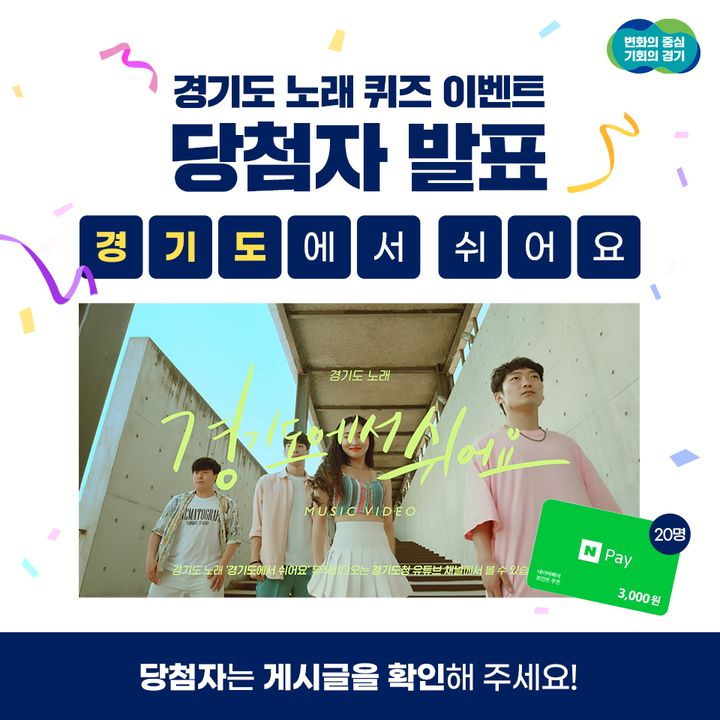
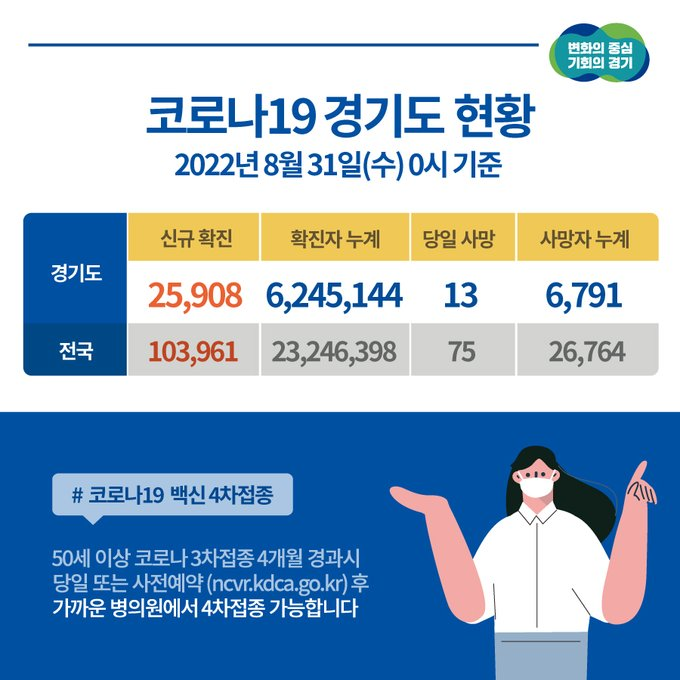
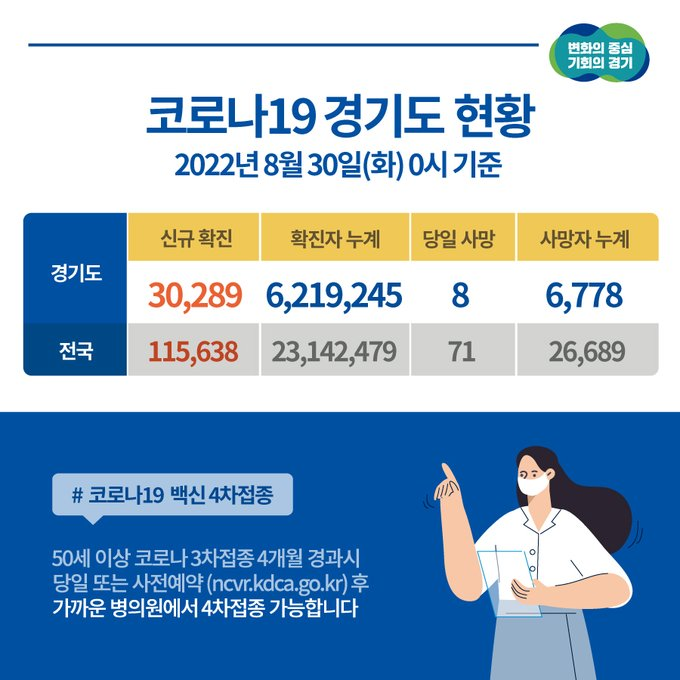
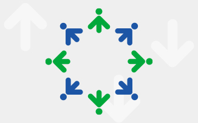

경기도 사이드 뉴스
경기뉴스광장경기도 공지사항 모아보기
-
보도자료
- 평택일자리박람회 찾은 ‘배달특급’2022.08.26
- 경기도의 `더 큰 평화를 위한 시작`, 2022 렛츠 디엠지 조직위 출범2022.08.26
- 뚜르 드 디엠지 2022 개막‥김동연 “디엠지, 한반도 평화 시대의 중심으로”2022.08.26
- 포기하지 마시고 경기도에 연락주세요 !! ‘경기도 긴급복지 핫라인’ 개설 이틀 만에 89건 접수2022.08.26
- (수정) 김동연 지사, “주민들 생존권 달린 재정비, 빠른 해결 위해 노력할 것” 조속한 1기 신도시 재정비 추진 위한 민심 행보. 일산 방문2022.08.26
-
최신소식
- 2022년 경기버스라운지 운영 성과 평가 결과 보고2022.08.26
- 화성비봉 A-3블록 공공분양 특별공급 신청 안내(다문화가족)2022.08.26
- 2022년 8월 반상회보 게시2022.08.26
- 「경기도 외국인투자기업지원센터 운영」성과평가 결과2022.08.26
- 주소기반 이동경로 정보구축 시범사업 성과점검 결과2022.08.26
-
계약입찰
- 2021년 가평소방서 본서 노후 공조설비 교체 건의 (다수공급자계약 2단계 경쟁)2022.08.26
- 경기도의회 의원실 및 교섭단체실 재배치 공사2022.08.26
- 도의회 피난계단 방화문 자동폐쇄장치 설치 공사2022.08.26
- 도의회 사무공간 재배치에 따른 기계설비 공사2022.08.26
- 성비위 근절을 위한 설문조사 위탁용역2022.08.26
-
고시공고
- 작물연구과 작물육종팀 공무직원(기간제근로자) 채용 서류전형 합격자 및 면접시험 공고2022.08.26
- 개인안전장비(안전장갑) 구매2022.08.26
- 포천 왕숙천 수해상습지 개선사업2022.08.26
- 시흥 월곶119안전센터 신축공사(건축, 기계)2022.08.26
- 부동산개발업 신규등록 공고2022.08.26
-
유튜브

-
이벤트 녹음 예시
-
경기도 대기오염 최적방지시설 기술발표회(2차)
-
[서비스 확대]마이데이터 기반 행정서비스 경기똑D｜맞춤형 혜택정보 제공
-
경기도 대기오염 최적방지시설 기술발표회(1차)
-
-
페이스북
-
#추석 앞두고 쓰-윽 #소상공인 노리고 쓰-윽 #저신용자 노리고 쓰-윽
-
2022년 올해 마지막 기회! #경기청년 #일자리매치업
-
"복지는 시혜가 아니라 권리입니다"
-

경기도 노래 퀴즈 이벤트 #당첨자발표 🎉
-
-
트위터
-

📌경기도 #코로나19 현황 💬 2022.8.31.(수) 0시 기준
-
#추석 앞두고 쓰-윽 #소상공인 노리고 쓰-윽 #저신용자 노리고 쓰-윽
-

📌경기도 #코로나19 현황 💬2022.8.30.(수) 0시 기준
-
2022년 올해 마지막 기회! #경기청년 #일자리매치업
-
경기도 뉴스 모아보기
-
공정경기
-
경기도민 복지권 보장을 위한 시스템 개선
2022.08.26 -
8월 22일, 새로워진 ‘경기똑D’ 만나보세요
2022.08.26 -
모바일 전자도민증 ‘도민카드’ 사용처가 확대됩니다
2022.08.26
-
-
안전경기
안전경기 게시물 더 보기 -
행복경기
-
8월 29일 경술국치일 나라사랑 태극기 달기
2022.08.26 -
2022 경기도 스마트산업분야 장애인 취업박람회 개최
2022.08.26 -

2022 경기도 인구정책 토론회 개최
2022.08.26
-
-
희망경기
희망경기 게시물 더 보기 -
함께경기
함께경기 게시물 더 보기